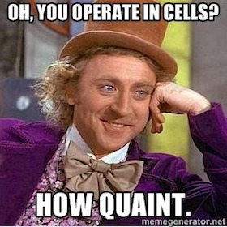

CombatOps: Running Wars from a Keyboard
Originally published at https://singularityhacker.com/combatops
There’s no free lunch. Every strength has a cost. The same technologies that enable distributed anonymous communication enable terrorist organizations to communicate unimpeded. Or the same advances in additive manufacturing make it possible to print firearms from the comfort of your bedroom.
This creates a genuine dilemma for nation states trying to enforce the rule of law in a technological singularity. It is, today, possible to start a full blown war from a keyboard.. full stop. I want to talk about three mechanisms that are being leveraged to do that very thing.
Communication: Who needs dead drops and burner phones when you have distributed social networks. Enter Diaspora. Diaspora came about because people didn’t want Facebook to own their data. Diaspora operates on a node/pod basis such that each pod is autonomous and shares its users info with other pods. Any one can fork the Diaspora code and fire up a pod on any server. Instant scalable social network. Strangely enough, it’s the primary means the terrorist group ISIS is using to communicate now.
Funding: Money laundering is so old-timey. With Bitcoin, or any altcoin for that matter, even high profile figures can funnel unlimited funds to special interest groups anonymously. It effectively becomes possible to crowdsource military operations from a keyboard from within the state you are waging war against using it’s own economy and citizens.
Armaments: Arms dealing is dead. 3D printed firearms have disrupted the scene. Printed firearms are undetectable and untraceable and can be assembled on a just-in-time bases. And it’s not just firearms any more. Printed drones are becoming a thing. I’m envisioning a future where you can have a war kit in a suitcase. Open it up and guns and a cloud of drones fly out. Yesterdays crockpot bomb is tomorrows printed nuke.
Last but not least we have advances in Intelligent Systems. The concept of a DAC (Distributed Autonomous Corporations) can and is being applied to combatant endeavors in the form of assassination markets.
Combat DACs can be disastrous to standard counter terrorism techniques which rely on social network analysis (SNA) to ferret out cells and cell members. Using a DAC would mean there’s no critical communication between cell groups or cell members and that no single operative has enough knowledge to compromise the operation. Each player would be independently directed by the DAC to achieve the overarching mission.

If you haven’t seen Balaji Srinivasan’s talk on Silicon Valley’s Ultimate Exit then watch it now. What he describes is an opting out of nation-state citizenship on a technological and economic level. The idea is that you could have cyber nations on top of “real” ones. The interesting part about the above observations is that it’s not only possible to opt out in the Srinivasan fashion but also possible for these cyber nations to wage war against the meatspace nations they inhabit and to, there by, assert their own sovereignty.